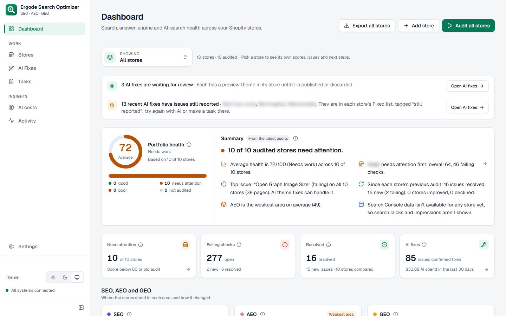
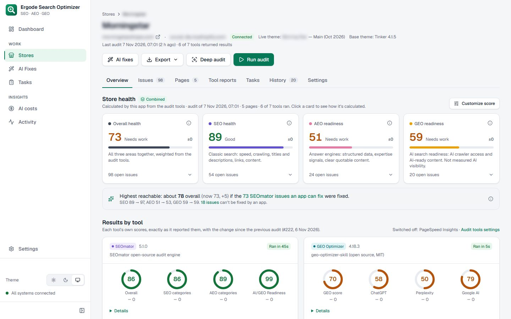
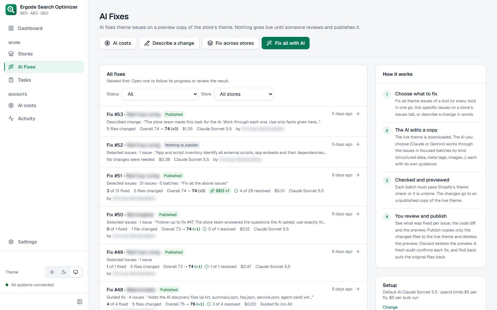
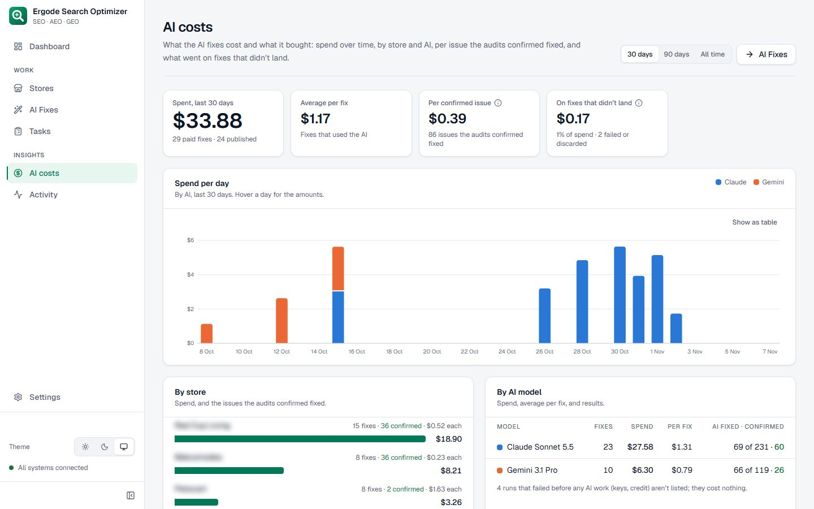

An AI agent that fixes SEO issues, and proves each fix worked.
Search Optimizer audits Shopify stores with eight tools, combines them into one comparable SEO, AEO and GEO score, and uses an AI agent to fix the issues in the theme and the store's content. A fix only counts when the audit tool itself confirms it.

The problem
Stores need to rank in classic search (SEO), answer engines (AEO) and AI search like ChatGPT and Perplexity (GEO). The old workflow could not keep up.
Fragmented audits
Results came from many separate tools, and their scores were not comparable.
Manual fixing
Fixing meant uploading audit files to a chat AI and copying the edits into Shopify by hand.
No proof
Nobody could tell which fixes had actually worked.
What I built
One workspace per store, one portfolio view, and an agent that does the fixing.
One score per store, explained
Eight tools run side by side and feed weighted Overall, SEO, AEO and GEO scores.
- SEOmator, PageSpeed (median of 3 runs), GEO readiness, AI citability, brand presence, rich results, site crawl, Search Console
- Weights adjustable per tool; click any score to see how it was calculated
- A 'highest reachable' estimate shows what fixing every app-fixable issue would be worth

Fixes that are confirmed, not claimed
Every published fix is compared with the audits before and after it, which are never changed.
- Issues count as fixed only when the next audit no longer reports them
- Problems on pages counted, so partial progress is visible
- A celebration for measured gains only; a fix that changed nothing gets none

Every fix reviewable and reversible
The AI edits a copy of the theme. Nothing goes live until a person reviews it and presses Publish.
- Preview theme on Shopify, theme check, and the code diff
- Publish copies only the changed files; an automatic theme backup comes first
- One-click rollback, which refuses to overwrite edits made since
- Fix across stores: a verified fix is reused on stores with the same theme

AI cost you can see
Every fix is metered, so the team can see what each confirmed improvement cost.
- Spend limits per fix and per bulk run, with an estimate before every run
- Spend per day, per store and per model
- Cost per confirmed issue: $0.40 over 30 days
- Prompt caching: 95% of input tokens served from cache

How it works
The agent doesn't get to declare victory. Every fix goes through a verification loop.
Audit
- 8 tools per store
- Pages fetched once, shared
Score
- Weighted Overall, SEO, AEO, GEO
- Inputs stored per audit
Fix
- Claude or Gemini with tool use
- Theme copy + Admin API content
Verify
- Sees the rendered preview
- Runs the audit's own rule
- Retries with evidence
Publish
- Human review of the diff
- Backup, then changed files only
Confirm
- Next audit waits for Shopify
- Fixed only if the tool agrees
The bigger win: why fixes looked ineffective
Early on, only about 10% of issues were being confirmed. Root-cause analysis found four causes, and the redesign fixed all of them.
- Scoring settings were changing mid-test, so comparisons now re-score both audits like for like
- The AI was working blind, so it now sees the rendered pages
- Issues went to the wrong place, so theme and content fixes happen in one run
- Confirmation ran before Shopify updated, so the audit now waits for the store to settle
Results
Measured over the last 30 days at the time of writing (Nov 2026).
What I learned
Don't let an agent grade its own work
The agent saying "fixed" meant little. Running the audit tool's own rule on a live preview made the results trustworthy.
Measure like for like
A score that moves because a weight changed is noise. Comparisons re-score both audits the same way before showing a change.
Make AI cost visible
Showing cost per confirmed issue turned "is the AI worth it?" from a feeling into a number.
Stack
Back end
Front end
AI
Shopify
Quality
Want this kind of work on your team? Let's talk.
I'm open to Integration Engineer, Full Stack, Technical Lead and Shopify roles, especially in e-commerce, SaaS and AI products.